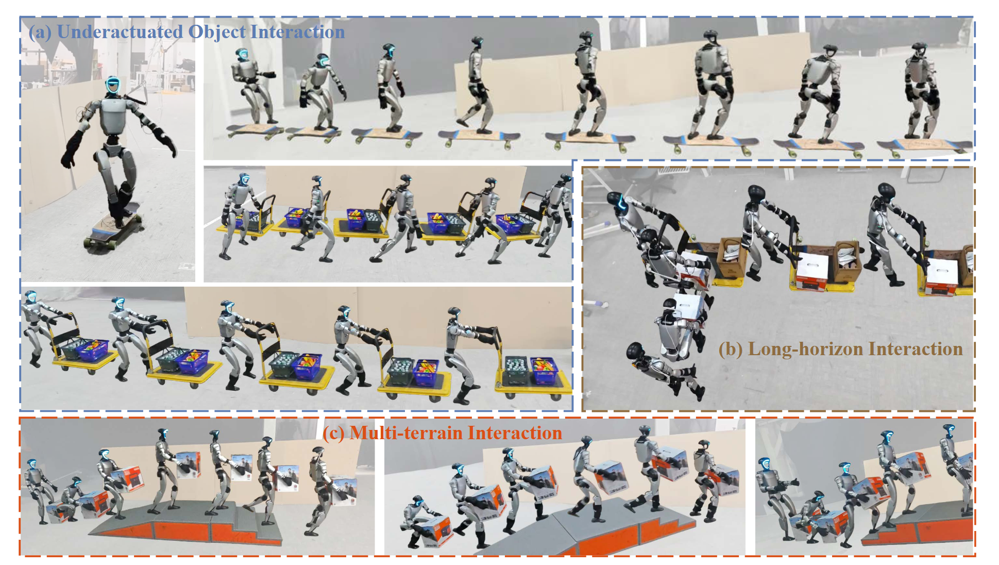
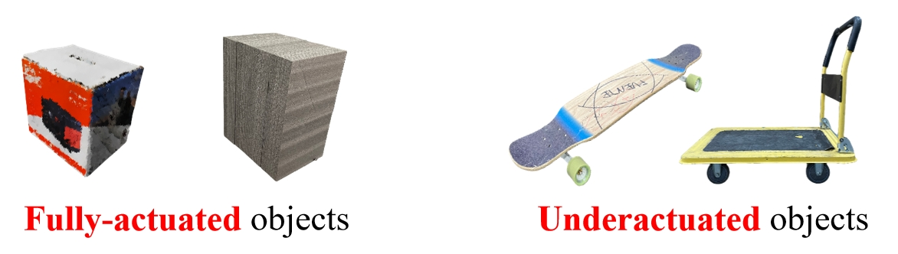
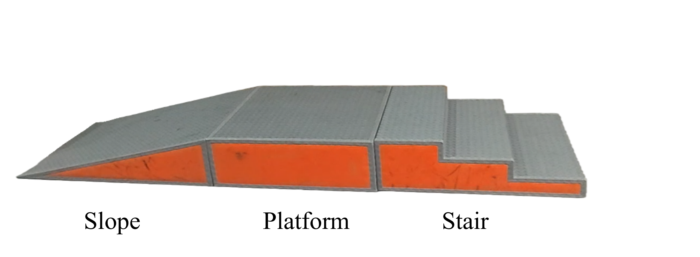

Humanoid robots exhibit significant potential for executing complex whole-body interaction tasks in unstructured environments. While recent advancements in Human-Object Interaction (HOI) have been substantial, prevailing methodologies predominantly address the manipulation of fully actuated objects, where the target is rigidly coupled to the robot's end-effector and its state is strictly constrained by the robot's kinematics. This paradigm neglects the pervasive class of underactuated objects characterized by independent dynamics and non-holonomic constraints, which pose significant control challenges due to complex coupling forces and frequent visual occlusions. To bridge this gap, we propose HAIC, a unified framework designed to enable robust interaction across a spectrum of object dynamics without reliance on external state estimation. Central to our approach is a novel dynamics predictor that infers high-order object states, specifically velocity and acceleration, solely from proprioceptive history. These predictions are explicitly projected onto static geometric priors to construct a spatially grounded representation of dynamic occupancy, allowing the policy to internalize collision boundaries and contact affordances in visual blind spots. We employ an asymmetric fine-tuning strategy where the world model continuously adapts to the student policy's exploration, ensuring robust state estimation under distribution shifts. We evaluate our framework on a humanoid robot. Empirical results demonstrate that HAIC achieves high success rates in agile object interactions, including skateboarding, cart pushing, and cart pulling under various weight load conditions, by proactively compensating for inertial physical perturbations, while HAIC simultaneously masters multi-object interaction involving long-horizon tasks and carrying a box across composed terrain by predicting the dynamics of multiple objects.

Skateboarding: HAIC enables agile underactuated-object interaction by predicting high-order object dynamics from proprioception and proactively compensating inertial perturbations.
Cart Pushing: HAIC handles non-holonomic wheeled objects with coupled dynamics under occlusions, maintaining stability during high-speed pushing.
Cart Pulling: HAIC predicts object velocity/acceleration from proprioception to reduce response lag and improve robustness in dynamic pulling.
Loading Box: The robot first locates and loads a box onto the cart. Cart Pushing/Pulling: The robot then transports the loaded cart to the target destination, demonstrating coordinated whole-body control over extended task horizons.

Cross Slope: The policy maintains stable locomotion and object interaction when the carried object occludes visual observation of the ground.
Cross Stair: HAIC supports multi-terrain traversal by estimating object/scene dynamics and grounding predictions onto geometric priors.
Composed Terrain: The controller carries a box across composed terrains (platforms, slopes, stairs) under visual blind spots.
Box Size: The robot generalizes to various box dimensions and weights. Tested configurations include 0.5–1.3 kg boxes with lengths ranging from 30–40 cm, demonstrating robust performance across different physical properties using dynamics-aware state estimation.
Terrain Rotation: The robot generalizes across different terrain rotation angles (0°, 30°, 45°) while preserving robust interaction behavior and stable locomotion on rotated surfaces.
Load Weight (Pulling): Testing with varying loads from Load 0 kg to Load 20 kg. The policy demonstrates robust generalization to heavier loads by proactively compensating inertial perturbations inferred from proprioception.
Load Weight (Pushing): Comprehensive evaluation across Load from 0 kg to 70 kg. The controller maintains stability and control even under extreme load conditions.
Failure Cases: Representative failure modes include stumbling when stepping off skateboards, and occasional failures in cart pushing tasks due to loss of contact or positioning errors.